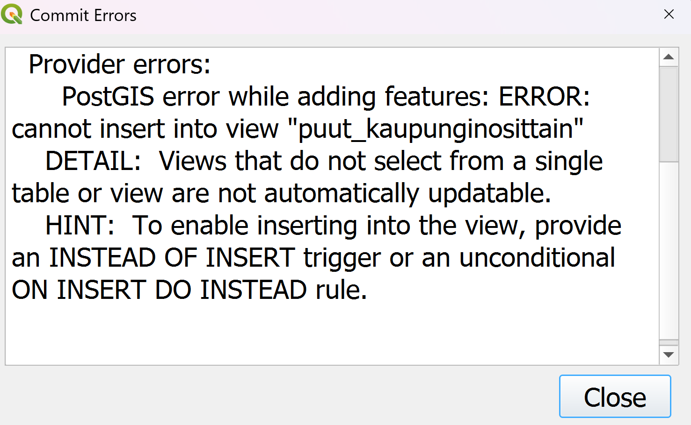

6 Harjoitus 5: Triggerit ja niiden luonti
Harjoituksen sisältö - Harjoituksessa tutustutaan PostgreSQL:n triggereihin ja niiden määrittelyyn.
Harjoituksen tavoite - Harjoituksen jälkeen opiskelija tuntee PostGIS-geometrioiden käsittelyn perusteet.
6.0.1 Valmistautuminen
Avaa pgAdmin selaimeen ja kirjaudu sisään. Avaa Query Tool (Valitse trainingdatabase -> Ylhäältä Tools -> Query Tool).
6.1 Harjoitus 5.1: Triggeri näkymän päivittämiseen
Loimme aiemmassa harjoituksessa yksinkertaisen näkymän “puut_kaupunginosittain”. Mikäli koitit muokata kohteita tämän näkymän kautta esimerkiksi pgAdminin tai QGISin kautta, tulit huomaamaan että muokkauksia tallentaessa (COMMIT) törmäsit virheeseen:

Tämä johtuu siitä, että näkymien päivittäminen edellyttää useamman ehdon täyttymistä (https://www.postgresql.org/docs/current/sql-createview.html, updatable views), ja ei onnistu suoraan, jos näkymä koostuu esim. tauluista joilla on liitoksia toisiin tauluihin. Sen sijaan tällaisille näkymille voidaan määritellä INSTEAD OF -tyyppinen triggeri tiedon muokkaamista varten. Samaten, jos kohteita halutaan poistaa tai muokata näkymän kautta, täytyy näille operaatiolle luoda omat INSTEAD OF -tyyppiset triggerinsä.
- Luo triggeri olemassaolevan kohteen muokkaamiselle
Ensin pitää muodostaa ns. trigger-funktio, jonka syntaksi on muotoa
CREATE OR REPLACE FUNCTION funktion_nimi()
RETURNS trigger AS $$
BEGIN
<funktion runko>
-- mitä triggerin halutaan tekevän
END;
$$ LANGUAGE plpgsql;CREATE OR REPLACE FUNCTION puut_view_update()
RETURNS trigger AS $$
BEGIN
-- normaali SQL-syntaksi UPDATELLE
UPDATE ...
SET (..., ...) = (NEW.__, NEW.__)
WHERE id = OLD.id;
RETURN NEW;
END;
$$ LANGUAGE plpgsql;CREATE OR REPLACE FUNCTION puut_view_update()
RETURNS trigger AS $$
BEGIN
UPDATE puurekisteri
SET (geom, kadunnimi) = (NEW.geom, NEW.kadunnimi)
WHERE id = OLD.id;
RETURN NEW;
END;
$$ LANGUAGE plpgsql;ja funktion luomisen jälkeen varsinainen triggeri, joka on muotoa
CREATE TRIGGER <nimi>
INSTEAD OF <operaatio> ON <taulu>
FOR EACH ROW
EXECUTE FUNCTION puut_view_update();CREATE TRIGGER puut_update
INSTEAD OF UPDATE ON view_tienvarren_puut
FOR EACH ROW
EXECUTE FUNCTION puut_view_update();CREATE TRIGGER puut_update
INSTEAD OF UPDATE ON view_tienvarren_puut
FOR EACH ROW
EXECUTE FUNCTION puut_view_update();Tässä siis luotiin toiminnallisuus joka päivittää puurekisteri-taulua jos joko näkymän kohteen geometriaa tai kadunnimi-kenttää muokataan. Voit halutessasi sisällyttää trigger-funktioon myös muita kenttiä. Tarkista pgAdminin sivupaneelista tietokannan kohdalta, minne määritetyt funktio ja triggeri tulevat näkyviin. Kokeile sitten näkymän kautta kohteen muokkaamista joko suoraan pgAdminissa tai vastaavaa QGISiin tuotua tasoa muokkaamalla.
- Entä, jos käyttäjä haluaa joko luoda uuden kohteen (INSTEAD OF INSERT) tai poistaa rivin (INSTEAD OF DELETE) näkymän kautta? Miten triggerin ja vastaavan funktion määrittely silloin kävisi? Yritä muodostaa näitä varten kaksi uutta triggeriä ja funktiota.
6.2 Harjoitus 5.2: Trigger kenttien päivittämiseen
Tehdään vielä toinen triggeri ja triggeri-funktio, tällä kertaa liikennevaylat-tauluun. Taulussa on mm. kentät “paivitetty” (date-tyyppiä) sekä “lisatietoj” (character varying (254)). Halutaan tehdä triggeri joka päivittää nämä kentät automaattisesti riviltä jos tauluun lisätään uusi kohde tai olemassaolevaa muokataan. Kentän “paivitetty” triggerin pitäisi asettaa muokkauspäivä (CURRENT_DATE) ja “lisatietoj” kenttään teksti ‘tarkistettu’.
CREATE OR REPLACE FUNCTION liikennevaylat_update()
RETURNS trigger AS $$
BEGIN
<funktion runko>
-- mitä triggerin halutaan tekevän
END;
$$ LANGUAGE plpgsql;CREATE OR REPLACE FUNCTION liikennevaylat_update()
RETURNS trigger AS $$
BEGIN
NEW.___ := CURRENT_DATE;
NEW.___ := ...;
RETURN NEW;
END;
$$ LANGUAGE plpgsql;CREATE OR REPLACE FUNCTION liikennevaylat_update()
RETURNS trigger AS $$
BEGIN
NEW.paivitetty := CURRENT_DATE;
NEW.lisatietoj := 'tarkistettu';
RETURN NEW;
END;
$$ LANGUAGE plpgsql;CREATE OR REPLACE TRIGGER <nimi>
BEFORE <operaatiot> ON <taulu>
FOR EACH ROW
EXECUTE FUNCTION <nimi>;CREATE OR REPLACE TRIGGER trg_liikennevaylat_update
BEFORE INSERT OR UPDATE ON liikennevaylat
FOR EACH ROW
EXECUTE FUNCTION liikennevaylat_update();CREATE OR REPLACE TRIGGER trg_liikennevaylat_update
BEFORE INSERT OR UPDATE ON liikennevaylat
FOR EACH ROW
EXECUTE FUNCTION liikennevaylat_update();- Testaa triggeriä muokkaamalla olemassa olevan liikennevaylan tietoja sekä luomalla uusia kohteita (kaikkia kenttiä ei tarvitse insertoida).